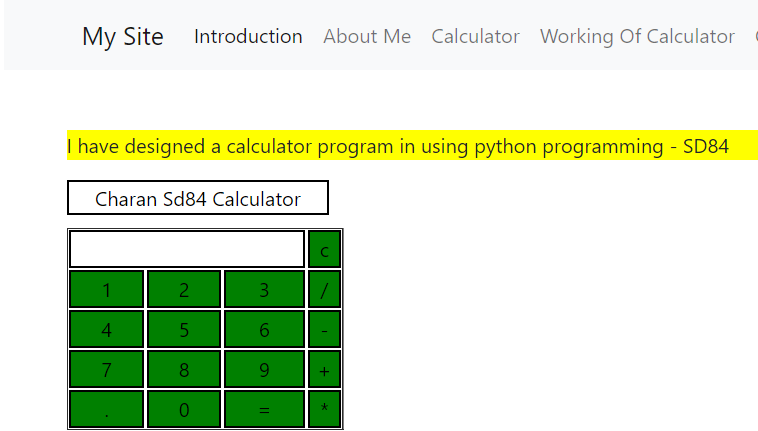
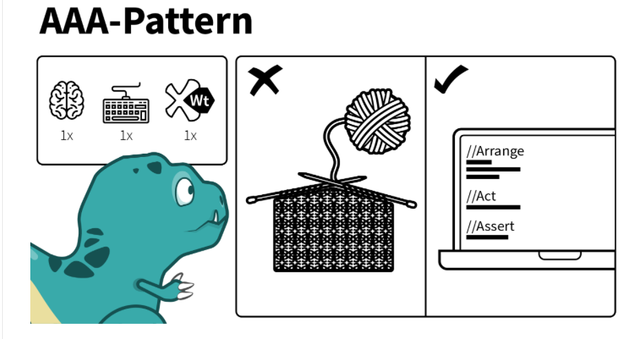
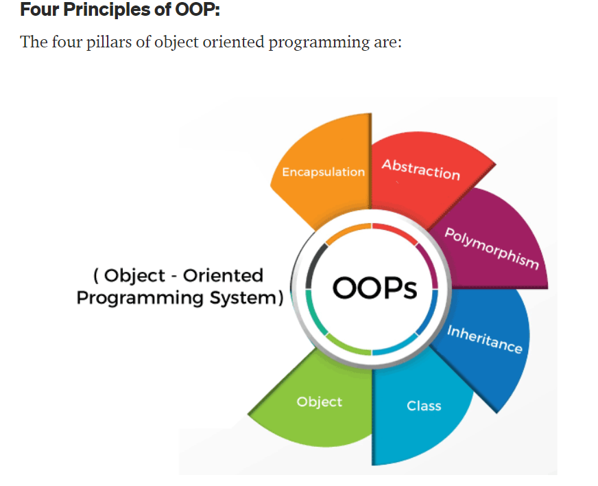
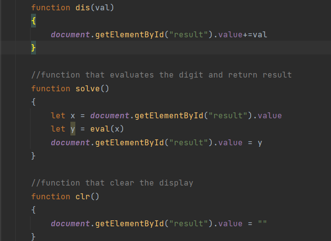
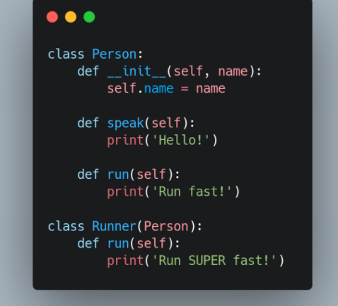
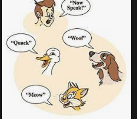
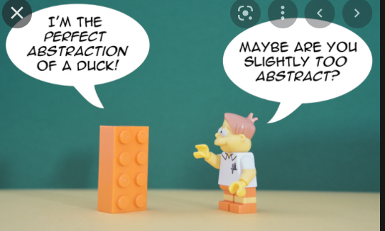
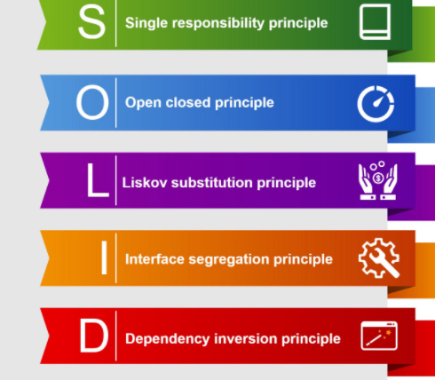
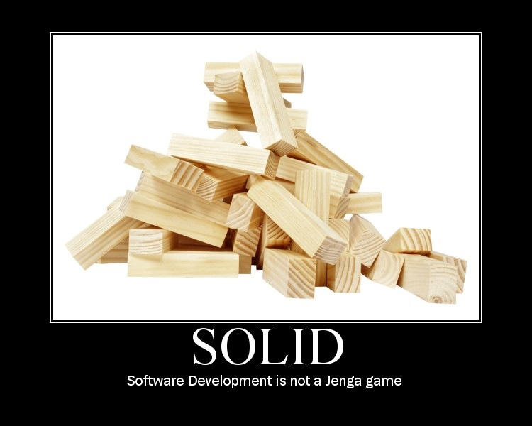

Caluclator Program
Using Object Oriented Programming Principles
This page contains HTML, CSS and JavaScript-based design templates for typography, forms, buttons, navigation, and other interface components.
1 / 10

Caluclator
2 / 10

AAA testing
3 / 10

OOPs
4 / 10

Encapsulation
5 / 10

Inheritance
6 / 10

Polymorphism
7 / 10

Abstraction
8 / 10

SOLID
9 / 10

Unit Testing
10 / 10

Design Patterns
I have designed a calculator
Touch the dots to see the Slides